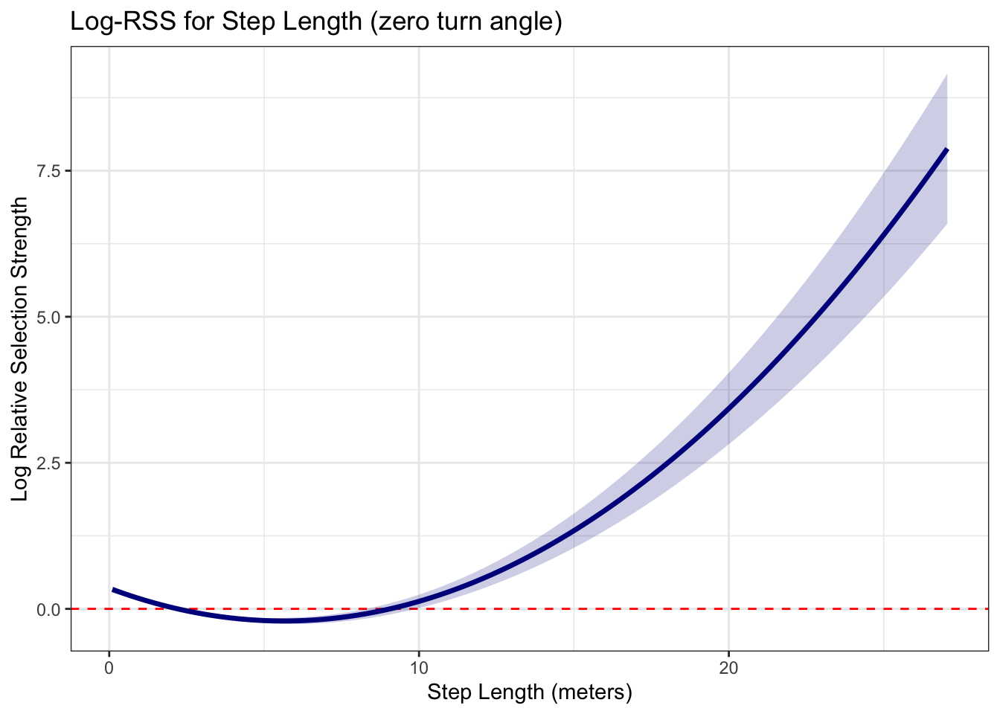
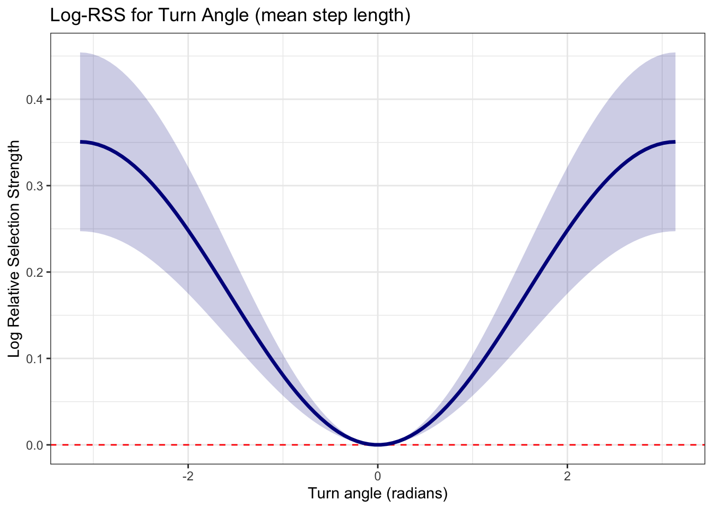
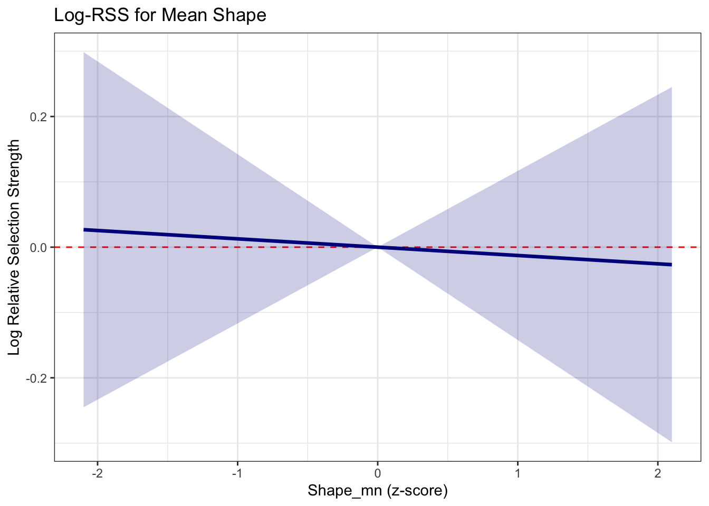
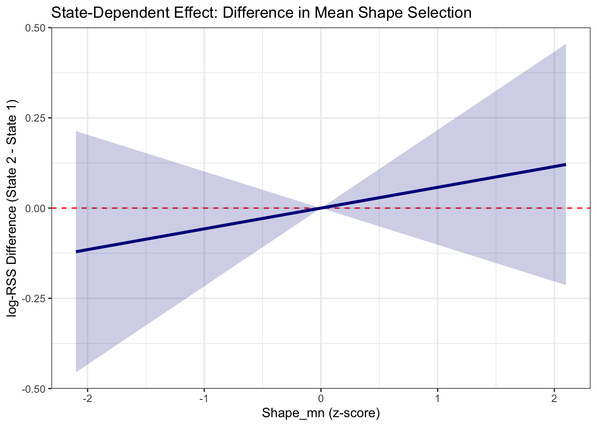
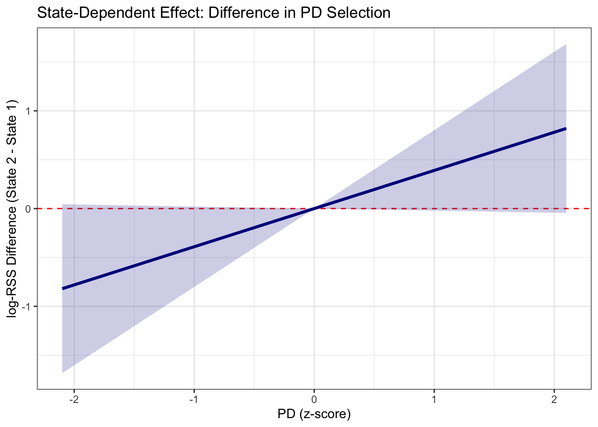

#Load in libraries
library(amt) #Package that iSSFs are in
##
## Attaching package: 'amt'
## The following object is masked from 'package:stats':
##
## filter
library(tidyverse)
## ── Attaching core tidyverse packages ──────────────────────── tidyverse 2.0.0 ──
## ✔ dplyr 1.1.4 ✔ readr 2.1.5
## ✔ forcats 1.0.1 ✔ stringr 1.5.2
## ✔ ggplot2 4.0.0 ✔ tibble 3.3.0
## ✔ lubridate 1.9.4 ✔ tidyr 1.3.1
## ✔ purrr 1.1.0
## ── Conflicts ────────────────────────────────────────── tidyverse_conflicts() ──
## ✖ dplyr::filter() masks amt::filter(), stats::filter()
## ✖ dplyr::lag() masks stats::lag()
## ℹ Use the conflicted package (<http://conflicted.r-lib.org/>) to force all conflicts to become errors
library(survival)
library(ggeffects)
strue <- read_csv('data/data_environmental.csv')
## New names:
## Rows: 45836 Columns: 20
## ── Column specification
## ──────────────────────────────────────────────────────── Delimiter: "," chr
## (1): id dbl (16): ...1, division, ed, pd, pland, shape_mn, x1_, x2_, y1_, y2_,
## sl_,... lgl (1): case_ dttm (2): t1_, t2_
## ℹ Use `spec()` to retrieve the full column specification for this data. ℹ
## Specify the column types or set `show_col_types = FALSE` to quiet this message.
## • `` -> `...1`
# Standardize continuous habitat variables (z-score transformation)
# This helps with model convergence and interpretation of interaction terms.
steps_finalr <- strue %>%
mutate(
# Standardize continuous habitat covariates
pland_z = scale(pland)[, 1],
ed_z = scale(ed)[, 1],
pd_z = scale(pd)[, 1],
shape_mn_z = scale(shape_mn)[, 1],
division_z = scale(division)[,1],
# Convert state to a factor for proper modeling interaction
state_f = factor(state)
) %>% drop_na()
# Fit the iSSF using conditional logistic regression (clogit).
issf_modelr <- steps_finalr %>%
drop_na() %>%
fit_clogit(case_ ~
# Movement terms
sl_ + I(sl_^2) +
cos(ta_) +
# Habitat selection with interaction with HMM state
pland_z * state_f +
ed_z * state_f +
pd_z * state_f +
shape_mn_z * state_f +
class * state_f +
division_z * state_f +
# The required stratification term for iSSF
strata(step_id_), model = T
)
summary(issf_modelr)
## Call:
## coxph(formula = Surv(rep(1, 45836L), case_) ~ sl_ + I(sl_^2) +
## cos(ta_) + pland_z * state_f + ed_z * state_f + pd_z * state_f +
## shape_mn_z * state_f + class * state_f + division_z * state_f +
## strata(step_id_), data = data, model = ..1, method = "exact")
##
## n= 45836, number of events= 4685
##
## coef exp(coef) se(coef) z Pr(>|z|)
## sl_ -3.237e-02 9.682e-01 1.129e-03 -28.675 < 2e-16 ***
## I(sl_^2) 1.331e-04 1.000e+00 4.168e-06 31.936 < 2e-16 ***
## cos(ta_) 1.748e-01 1.191e+00 2.523e-02 6.926 4.31e-12 ***
## pland_z 4.461e-01 1.562e+00 2.258e-01 1.975 0.0482 *
## state_f2 NA NA 0.000e+00 NA NA
## ed_z 1.427e-02 1.014e+00 7.079e-02 0.202 0.8402
## pd_z 1.387e-01 1.149e+00 8.802e-02 1.575 0.1152
## shape_mn_z -3.919e-03 9.961e-01 4.225e-02 -0.093 0.9261
## class -2.966e-02 9.708e-01 1.093e-01 -0.271 0.7861
## division_z 3.161e-01 1.372e+00 2.403e-01 1.316 0.1883
## pland_z:state_f2 -5.593e-01 5.716e-01 3.029e-01 -1.847 0.0648 .
## state_f2:ed_z -4.848e-02 9.527e-01 9.054e-02 -0.535 0.5923
## state_f2:pd_z -8.134e-02 9.219e-01 1.116e-01 -0.729 0.4661
## state_f2:shape_mn_z 2.237e-02 1.023e+00 5.287e-02 0.423 0.6723
## state_f2:class -5.059e-02 9.507e-01 1.366e-01 -0.370 0.7112
## state_f2:division_z -6.020e-01 5.477e-01 3.248e-01 -1.853 0.0638 .
## ---
## Signif. codes: 0 '***' 0.001 '**' 0.01 '*' 0.05 '.' 0.1 ' ' 1
##
## exp(coef) exp(-coef) lower .95 upper .95
## sl_ 0.9682 1.0329 0.9660 0.9703
## I(sl_^2) 1.0001 0.9999 1.0001 1.0001
## cos(ta_) 1.1910 0.8396 1.1335 1.2514
## pland_z 1.5622 0.6401 1.0035 2.4319
## state_f2 NA NA NA NA
## ed_z 1.0144 0.9858 0.8830 1.1653
## pd_z 1.1487 0.8705 0.9667 1.3650
## shape_mn_z 0.9961 1.0039 0.9169 1.0821
## class 0.9708 1.0301 0.7836 1.2027
## division_z 1.3718 0.7290 0.8566 2.1968
## pland_z:state_f2 0.5716 1.7495 0.3157 1.0350
## state_f2:ed_z 0.9527 1.0497 0.7978 1.1377
## state_f2:pd_z 0.9219 1.0847 0.7408 1.1473
## state_f2:shape_mn_z 1.0226 0.9779 0.9220 1.1343
## state_f2:class 0.9507 1.0519 0.7273 1.2426
## state_f2:division_z 0.5477 1.8257 0.2898 1.0352
##
## Concordance= 0.702 (se = 0.005 )
## Likelihood ratio test= 1715 on 15 df, p=<2e-16
## Wald test = 1088 on 15 df, p=<2e-16
## Score (logrank) test = 1227 on 15 df, p=<2e-16iSSFs
iSSF calculation and visualization
This final section will provide an overview on how to run iSSFs and view and visualize the results using the amt package.
There are no significant effects except for step length and turn angle. But because this is a workshop, we are going to graph things anyway! The most single significant effect is the percentage of landscape that is dense SAV. There are no significant interaction effects, but pd and division are close. So we will go over how to graph these interactions and then we can answer any questions!
Graphing results
We are going to start graphing the results with investigating how the Relative Selection Strength (measured by log-rss) changes over the range of step lengths of our tracks. This will tell us what step lengths our fish prefer
#First let's set up some consistent values to use for the rest of the graphing
mean(steps_finalr$sl_)
## [1] 32.35597
max(steps_finalr$sl_)
## [1] 506.2842
min(steps_finalr$sl_)
## [1] 1.543542e-18
mean(steps_finalr$ta_)
## [1] 0.01016874
sl_mean <- 2.207 #mean step length (meters)
ang_mean <- 0.01 #mean turn angle (radians)
z_mean <- 0 #mean environmental variable (z-score)
sl_range <- seq(0.1, 27.054, length.out = 100) #range of step lengths (meters)
ang_range <- seq(-3.14, 3.14, length.out = 100) #range of turn angles (radians)
z_range <- seq(-2.1, 2.1, length.out = 100) #range of environmental variables (z-score)
n_points <- length(sl_range) # 100
hab_vars <- c("pland_z", "ed_z", "pd_z", "shape_mn_z", "division_z")
#create the dataset to test across for step length, keeping everything else constant
tsl <- data.frame(
sl_ = sl_range,
ta_ = rep(ang_mean, n_points),
pland_z = rep(0, n_points), ed_z = rep(0, n_points), pd_z = rep(0, n_points), shape_mn_z = rep(0, n_points), division_z = rep(0, n_points), #all of the environmental variables are centered around 0 because they are z-scored
state_f = factor(rep("1", n_points), levels = c("1", "2")),
class = factor(rep("1", n_points), levels = c("1", "2"))
)
#Then we need a 1-row dataset representing a single location. This will be the same as the previous one with the sl set to the mean
msl <- data.frame(
sl_ = sl_mean,
ta_ = ang_mean,
pland_z = 0, ed_z = 0, pd_z = 0, shape_mn_z = 0, division_z = 0,
state_f = factor("1", levels = c("1", "2")),
class = factor("1", levels = c("1", "2"))
)
#Calculate the log relative selection strength (log-RSS) for step length
rss_sl <- log_rss(issf_modelr, x1 = tsl, x2 = msl, ci = 'se')
#We can plot the step length log-RSS curve
plot_sl <- ggplot(rss_sl$df, aes(x = sl_x1, y = log_rss)) +
geom_hline(yintercept = 0, linetype = "dashed", color = "red") +
geom_line(linewidth = 1.2, color = "darkblue") +
geom_ribbon(aes(ymin = lwr, ymax = upr), alpha = 0.2, fill = "darkblue") +
theme_bw() +
labs(
title = "Log-RSS for Step Length (zero turn angle)",
x = "Step Length (meters)",
y = "Log Relative Selection Strength"
)
plot_sl
Looks like our fish prefer really short steps or really long ones compared to the random steps created. The random steps were created using distributions from the actual data. Now let’s graph turn angle
#create the dataset to test across for turn angle, keeping everything else constant
tang <- data.frame(
sl_ = rep(sl_mean, n_points),
ta_ = ang_range,
pland_z = rep(0, n_points), ed_z = rep(0, n_points), pd_z = rep(0, n_points), shape_mn_z = rep(0, n_points), division_z = rep(0, n_points), #all of the environmental variables are centered around 0 because they are z-scored
state_f = factor(rep("1", n_points), levels = c("1", "2")),
class = factor(rep("1", n_points), levels = c("1", "2"))
)
#1-row
mang <- data.frame(
sl_ = sl_mean,
ta_ = ang_mean,
pland_z = 0, ed_z = 0, pd_z = 0, shape_mn_z = 0, division_z = 0,
state_f = factor("1", levels = c("1", "2")),
class = factor("1", levels = c("1", "2"))
)
#Calculate the log relative selection strength (log-RSS) for turn angle
rss_ang <- log_rss(issf_modelr, x1 = tang, x2 = mang, ci = 'se')
plot_ang <- ggplot(rss_ang$df, aes(x = ta_x1, y = log_rss)) +
geom_hline(yintercept = 0, linetype = "dashed", color = "red") +
geom_line(linewidth = 1.2, color = "darkblue") +
geom_ribbon(aes(ymin = lwr, ymax = upr), alpha = 0.2, fill = "darkblue") +
theme_bw() +
labs(
title = "Log-RSS for Turn Angle (mean step length)",
x = "Turn angle (radians)",
y = "Log Relative Selection Strength"
)
plot_ang
Looks like our fish liked to go less straight than the random steps. We can also do the same thing for the environmental variables. Since PLAND is the most significant one, we will only show that one.
#create the dataset to test across for PLAND, keeping everything else constant
tpland <- data.frame(
sl_ = rep(sl_mean, n_points),
ta_ = rep(ang_mean, n_points),
pland_z = z_range, ed_z = rep(0, n_points), pd_z = rep(0, n_points), shape_mn_z = rep(0, n_points), division_z = rep(0, n_points), #all of the environmental variables are centered around 0 because they are z-scored
state_f = factor(rep("1", n_points), levels = c("1", "2")),
class = factor(rep("1", n_points), levels = c("1", "2"))
)
#1-row
mpland <- data.frame(
sl_ = sl_mean,
ta_ = ang_mean,
pland_z = 0, ed_z = 0, pd_z = 0, shape_mn_z = 0, division_z = 0,
state_f = factor("1", levels = c("1", "2")),
class = factor("1", levels = c("1", "2"))
)
#Calculate the log relative selection strength (log-RSS) for PLAND
rss_pland <- log_rss(issf_modelr, x1 = tpland, x2 = mpland, ci = 'se')
plot_pland <- ggplot(rss_pland$df, aes(x = pland_z_x1, y = log_rss)) +
geom_hline(yintercept = 0, linetype = "dashed", color = "red") +
geom_line(linewidth = 1.2, color = "darkblue") +
geom_ribbon(aes(ymin = lwr, ymax = upr), alpha = 0.2, fill = "darkblue") +
theme_bw() +
labs(
title = "Log-RSS for PLAND",
x = "PLAND (z-score)",
y = "Log Relative Selection Strength"
)
plot_pland
Looks like our fish prefer seascapes with more dense SAV in them! Now we can look at the interactions between state and environmental variables. If there was a significant result, that would mean that the fish preferred certain environmental variables when in a certain state. The most significant interaction was state and division, but pd was also close. We will graph both, starting with division
#create the dataset to test across for both state and division, keeping everything else constant
tdivstate <- data.frame(
sl_ = rep(sl_mean, n_points*2),
ta_ = rep(ang_mean, n_points*2),
pland_z = rep(0, n_points*2), ed_z = rep(0, n_points*2), pd_z = rep(0, n_points*2), shape_mn_z = rep(0, n_points*2), division_z = rep(z_range, 2), #all of the environmental variables are centered around 0 because they are z-scored
state_f = factor(rep(c("1", "2"), each = n_points)),
class = factor(rep("1", n_points), levels = c("1", "2"))
)
#1-row
mdivstate <- data.frame(
sl_ = sl_mean,
ta_ = ang_mean,
pland_z = 0, ed_z = 0, pd_z = 0, shape_mn_z = 0, division_z = 0,
state_f = factor("1", levels = c("1", "2")),
class = factor("1", levels = c("1", "2"))
)
#Calculate the log relative selection strength (log-RSS) for both states relative to baseline
rss_divstate <- log_rss(issf_modelr, x1 = tdivstate, x2 = mdivstate, ci = 'se')
#separate out based on state
df_state1 <- rss_divstate$df %>% filter(state_f_x1 == "1") %>% arrange(get("division_z_x1"))
df_state2 <- rss_divstate$df %>% filter(state_f_x1 == "2") %>% arrange(get("division_z_x1"))
#calculate SE of the difference (using a conservative approximation, ignoring covariance)
#SE_diff = sqrt(SE_1^2 + SE_2^2)
se_diff <- sqrt(((df_state1$upr-df_state1$lwr)/3.92)^2 + ((df_state2$upr-df_state2$lwr)/3.92)^2)
#create a new data frame for the difference plot
df_diff <- data.frame(
z_score = df_state1[["division_z_x1"]],
log_rss_diff = df_state2$log_rss - df_state1$log_rss,
# Calculate 95% CI bounds (Z-score 1.96 for 95%)
lwr_diff = (df_state2$log_rss - df_state1$log_rss) - 1.96 * se_diff,
upr_diff = (df_state2$log_rss - df_state1$log_rss) + 1.96 * se_diff
)
#plot the difference with confidence interval
plot_divstate <- ggplot(df_diff, aes(x = z_score, y = log_rss_diff)) +
geom_hline(yintercept = 0, linetype = "dashed", color = "red") +
geom_line(linewidth = 1.2, color = "darkblue") +
# Add the confidence interval ribbon
geom_ribbon(aes(ymin = lwr_diff, ymax = upr_diff), alpha = 0.2, fill = "darkblue") +
theme_bw() +
labs(
title = "State-Dependent Effect: Difference in Division Selection",
x = "Division (z-score)",
y = "log-RSS Difference (State 2 - State 1)"
)
plot_divstate
Not significant, but shows that fish are more likely to be in state 2 (“foraging state”) over areas with either larger dense SAV patches or little dense SAV. So how about PD?
#create the dataset to test across for both state and pd, keeping everything else constant
tpdstate <- data.frame(
sl_ = rep(sl_mean, n_points*2),
ta_ = rep(ang_mean, n_points*2),
pland_z = rep(0, n_points*2), ed_z = rep(0, n_points*2), pd_z = rep(z_range, 2), shape_mn_z = rep(0, n_points*2), division_z = rep(0, n_points*2), #all of the environmental variables are centered around 0 because they are z-scored
state_f = factor(rep(c("1", "2"), each = n_points)),
class = factor(rep("1", n_points), levels = c("1", "2"))
)
#1-row
mpdstate <- data.frame(
sl_ = sl_mean,
ta_ = ang_mean,
pland_z = 0, ed_z = 0, pd_z = 0, shape_mn_z = 0, division_z = 0,
state_f = factor("1", levels = c("1", "2")),
class = factor("1", levels = c("1", "2"))
)
#Calculate the log relative selection strength (log-RSS) for both states relative to baseline
rss_pdstate <- log_rss(issf_modelr, x1 = tpdstate, x2 = mpdstate, ci = 'se')
#separate out based on state
df_state1_ps <- rss_pdstate$df %>% filter(state_f_x1 == "1") %>% arrange(get("pd_z_x1"))
df_state2_ps <- rss_pdstate$df %>% filter(state_f_x1 == "2") %>% arrange(get("pd_z_x1"))
#calculate SE of the difference (using a conservative approximation, ignoring covariance)
#SE_diff = sqrt(SE_1^2 + SE_2^2)
se_diff_ps <- sqrt(((df_state1_ps$upr-df_state1_ps$lwr)/3.92)^2 + ((df_state2_ps$upr-df_state2_ps$lwr)/3.92)^2)
#create a new data frame for the difference plot
df_diff_ps <- data.frame(
z_score = df_state1_ps[["pd_z_x1"]],
log_rss_diff = df_state2_ps$log_rss - df_state1_ps$log_rss,
# Calculate 95% CI bounds (Z-score 1.96 for 95%)
lwr_diff = (df_state2_ps$log_rss - df_state1_ps$log_rss) - 1.96 * se_diff_ps,
upr_diff = (df_state2_ps$log_rss - df_state1_ps$log_rss) + 1.96 * se_diff_ps
)
#plot the difference with confidence interval
plot_pdstate <- ggplot(df_diff_ps, aes(x = z_score, y = log_rss_diff)) +
geom_hline(yintercept = 0, linetype = "dashed", color = "red") +
geom_line(linewidth = 1.2, color = "darkblue") +
# Add the confidence interval ribbon
geom_ribbon(aes(ymin = lwr_diff, ymax = upr_diff), alpha = 0.2, fill = "darkblue") +
theme_bw() +
labs(
title = "State-Dependent Effect: Difference in PD Selection",
x = "PD (z-score)",
y = "log-RSS Difference (State 2 - State 1)"
)
plot_pdstate
Looks like our fish like larger patches, but areas with more of them!
And thus concludes our workshop on going from raw acoustic telemetry data through analyses to results. Yes, yes, yes. In the title, we said “Downloads to Discussions.” So where is the discussion section? Well friends, that is up to you to interpret your data. For this example, you will just have to read the paper when it is out! Thanks for joining us! We will now take any questions.